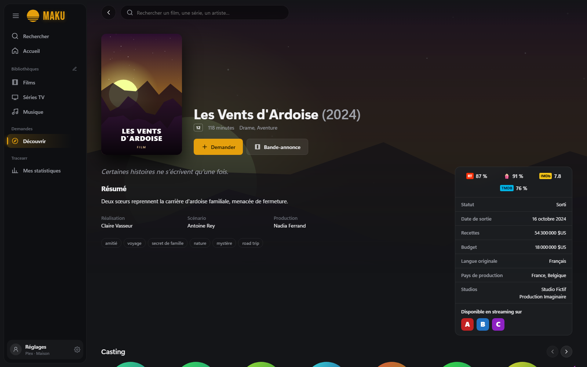

Accueil › Fonctionnalités › Les demandes
Les demandes, avec Seerr
Il manque un film ? Demandez-le, sans quitter le canapé.
Seerr est l'outil qui permet aux utilisateurs d'un serveur de demander un film ou une série absents. Maku l'intègre entièrement : vous découvrez ce qui sort, lisez la fiche, et demandez en un clic, dans la même application que celle où vous le regarderez.

Découvrir
Ce qui sort, ce qui plaît, ce qui arrive
La page Découvrir rassemble des rangées pensées pour donner des idées :
- Tendances : ce dont tout le monde parle en ce moment.
- Films populaires et Séries populaires.
- Films à venir et Séries à venir, pour demander avant la sortie.
- Demandes récentes, pour voir où en sont les vôtres et celles des autres.
- Ta liste de suivi, celle de votre compte, prête à être demandée.
Les tendances à demander peuvent aussi s'afficher sur l'accueil de Maku.
La fiche d'un titre
Tout savoir avant de demander
Chaque titre a sa fiche complète : résumé, notes de Rotten Tomatoes (critiques et public), bande-annonce, casting, date de sortie, statut de production, studios, chaînes, budget et recettes, et les plateformes où il est déjà disponible.
- Un acteur ouvre toute sa filmographie, les titres les plus connus d'abord : chacun mène à sa fiche, d'où le demander.
- Recommandations et titres similaires en bas de fiche, pour rebondir.
- Déjà sur votre serveur ? Voir dans Maku ouvre directement sa fiche dans votre bibliothèque.

Comment ça marche
De l'idée à l'écran
- Vous trouvez un titre, dans Découvrir ou avec la recherche : celle de Maku cherche dans votre bibliothèque, puis propose les titres absents à demander.
- Vous appuyez sur Demander. Pour une série, vous choisissez les saisons. La demande part à votre nom, avec vos droits et vos quotas sur Seerr.
- Seerr la transmet à l'administrateur du serveur ou la traite selon ses règles. L'administrateur peut la valider, la corriger ou la refuser directement dans Maku. Un titre déjà demandé, en cours ou disponible ne se redemande pas : la fiche affiche où il en est.
- Le titre arrive sur le serveur et apparaît dans votre bibliothèque Maku, prêt à être lu.
Sans clé, sans mot de passe en plus
Votre compte Plex suffit
Maku ouvre la session Seerr avec votre compte Plex : pas de clé d'API à saisir, pas de nouveau mot de passe. Votre compte doit simplement avoir été importé dans Seerr par l'administrateur.
- Avec Jellyfin ou Emby, Maku demande une fois votre identifiant et votre mot de passe. Le mot de passe n'est jamais enregistré, seule la session l'est.
- En un QR code : l'administrateur partage une invitation qui remplit l'adresse de Seerr pour vous.
- Sans exposer Seerr sur Internet, grâce au relais Maku Server que l'administrateur installe à côté du serveur.
- Sur la télé, la fiche se parcourt rangée par rangée à la télécommande, jusqu'aux recommandations.
Pour l'activer
Dans Réglages → Services, indiquez l'adresse de votre Seerr, ou appliquez l'invitation de l'administrateur. Maku se connecte tout seul.
Le guide de configuration →